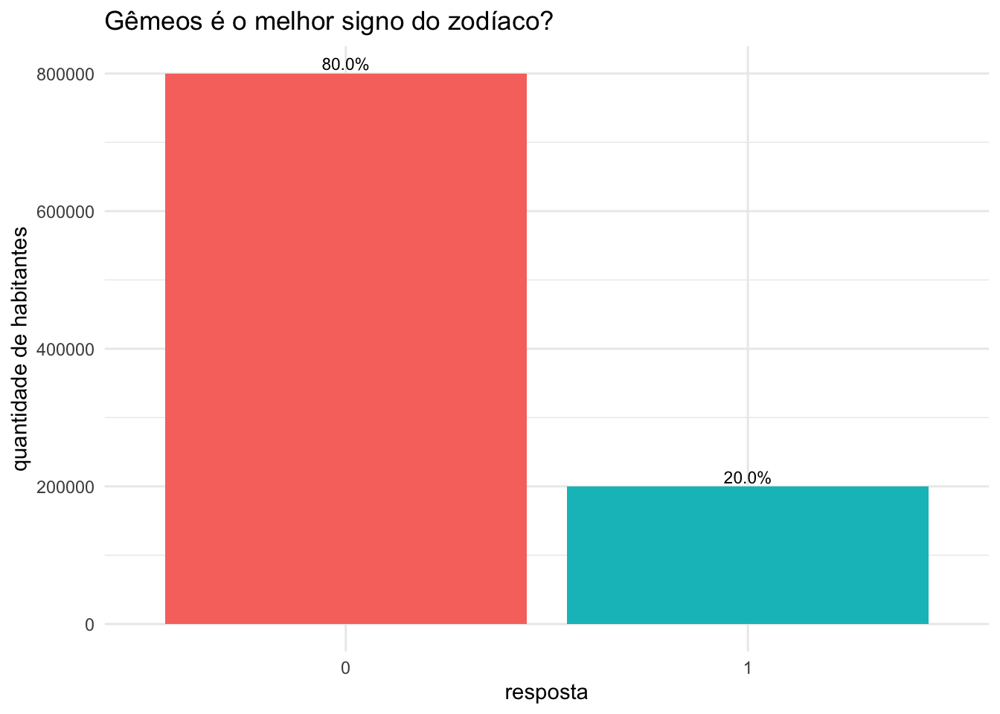
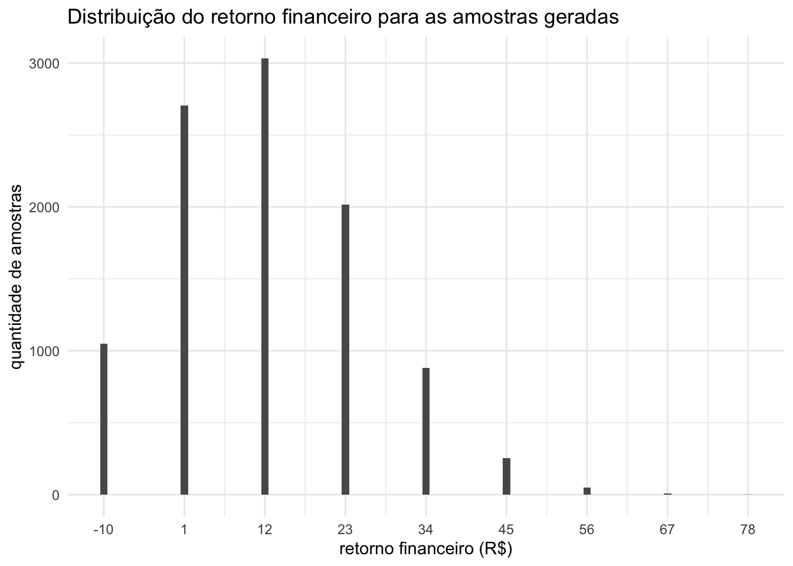
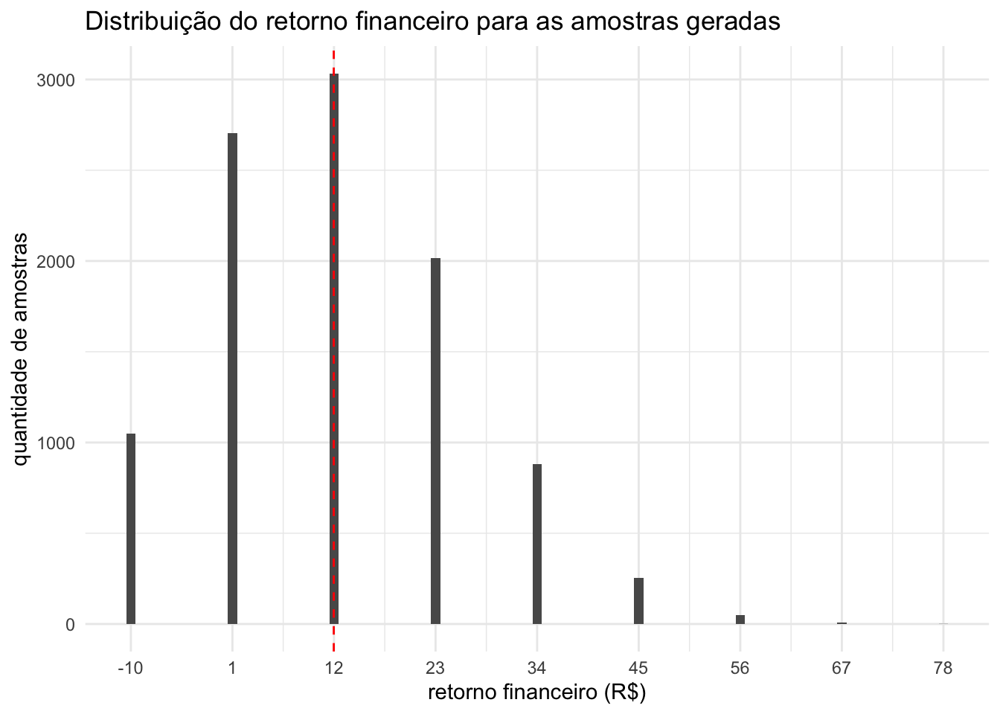
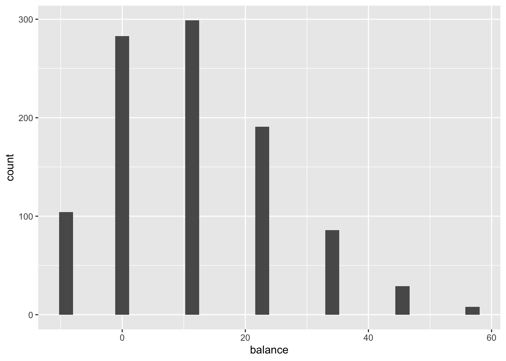

Vamos começar imaginando um mundo paralelo: um lugar com 1 milhão de habitantes. Como conhecemos cada pessoa desse mundo, sabemos exatamente a resposta deles para uma das perguntas mais importantes já feitas: “Gêmeos é o melhor signo do zodíaco, né?”.
Claro que a resposta certa seria SIM, mas, para não dizerem por aí que estou favorecendo meu próprio signo, vamos supor outra realidade: entre os 1 milhão de habitantes, 300 mil concordam que Gêmeos é o melhor, enquanto 700 mil discordam (eu sei… as pessoas têm alguma resistência com geminianos… completamente injustificada, aliás).
A tabela abaixo apresenta 10 habitantes do mundo que criamos. A coluna id representa o identificador de cada indivíduo (como se fosse o CPF), enquanto a coluna answer indica se aquela pessoa acredita que Gêmeos é o melhor signo do zodíaco (0 = “não”, 1 = “sim”).
Show the code
set.seed(123)n <-1e6population <- tidyr::tibble(id =paste0("id_", sample.int(n, n)), # ids aleatórios dos habitantes do nosso mundoanswer =c(rep(0, 800000), rep(1, 200000)) # resposta)set.seed(123)population |>slice_sample(n =10 ) |>mk_tbl(table_title ="Exemplo da população gerada")
Exemplo da população gerada
id
answer
id_998529
1
id_441537
0
id_118524
0
id_136978
0
id_709067
0
id_992969
0
id_357943
0
id_218443
0
id_150396
1
id_496701
0
Visualmente, o gráfico abaixo mostra quantos habitantes do nosso mundo acreditam (ou não) que Gêmeos é o melhor signo.

Agora imagine duas amigas que vivem nesse mundo e são apaixonadas por signos (e por jogos também). Vamos chamá-las de Ana e Bia. Em um certo dia, Bia faz uma proposta para Ana:
👩 Vamos sair agora e perguntar para a primeira pessoa que passar se ela acha que Gêmeos é o melhor signo do zodíaco. Se ela disser SIM, eu te dou 10 reais. Se disser NÃO, você me dá 1 real.
O questionamento é: Ana deveria aceitar esse jogo?
Sabemos que apenas 20% da população acredita que Gêmeos é o melhor signo. Ou seja, é mais provável que Ana encontre alguém que responda não (e, com isso, acabe perdendo 1 real)… Mas, se por sorte ela topar com alguém que responda sim, ela ganha 10 reais de uma vez…
Ana aceita a brincadeira, mas tenta melhorar suas chances: ela propõe que, em vez de perguntar apenas para uma pessoa, perguntem para 10 pessoas.
A regra segue sendo a mesma:
para cada pessoa que disser que Gêmeos não é o melhor signo, Ana paga 1 real para Bia;
para cada pessoa que disser que Gêmeos é o melhor signo, Ana recebe 10 reais da Bia.
Será que Ana vai acabar mesmo ganhando dinheiro com esse jogo?
Que os jogos comecem
É claro que, em um jogo de sorte, o resultado final depende justamente da SORTE. Então, na prática, só jogando para saber se a Ana sairia ganhando ou perdendo dinheiro. Mas existe uma forma de modelar esse cenário estatisticamente e estimar quanto ela tende a ganhar (ou perder) em média.
Como conhecemos a distribuição da população (20% gostam de geminianos e 80% não gostam), podemos imaginar o seguinte: a cada 10 pessoas abordadas, espera-se que 2 respondam que gostam do signo de Gêmeos e 8 digam que não gostam.
Com isso:
Ana ganha 20 reais pelas duas respostas “sim”;
Ana perde 8 reais pelas oito respostas “não”.
Ou seja, o ganho esperado é de (+20 -8) 12 reais.
Como geramos a população desse mundo fictício, vamos ver a aposta acontecendo na prática?
Abaixo, amostramos 10 pessoas da nossa população (ou seja, as 10 pessoas aleatórias que Ana e Bia encontrariam na rua) e calculamos quanto a Ana teria ganhado nesse cenário.
Amostra 1
answer
n
balance
0
6
-6
1
4
40
Se o jogo tivesse acontecido com a amostra acima, 6 pessoas teriam respondido que não gostam de Gêmeos e 4 teriam dito que gostam. Assim, Ana ganharia 40 reais pelas quatro respostas “sim” e perderia 6 reais pelas seis respostas “não”. No total, ela ficaria com 34 reais (um valor superior aos 12 reais que estávamos esperando).
Mas… e se tivéssemos retirado outra amostra da população (exemplo abaixo)?
Amostra 2
answer
n
balance
0
8
-8
1
2
20
Se as pessoas selecionadas ao acaso fossem as da amostra acima, Ana perderia 8 reais pelas oito pessoas que não gostam de Gêmeos e ganharia 20 reais pelas duas pessoas que gostam. Assim, seu saldo final seria de 12 reais (exatamente igual ao valor que esperávamos que ela ganhasse).
Até o momento, parece que Ana fez uma boa escolha ao aceitar essa aposta, pois, em dois cenários simulados, ela teria ganhado dinheiro!
Vamos avaliar mais um cenário só pra ver o que aconteceria nele?
Amostra 3
answer
n
balance
0
10
-10
Nesse último cenário, todas as pessoas entrevistadas diriam que não gostam do signo de gêmeos, e, com isso, Ana teria perdido 10 reais!!!
Bom, é óbvio que o que realmente vai acontecer vai depender da sorte… mas, pelo que notamos das amostras selecionadas acima, em 2 cenários a aposta teria sido positiva pra Ana e em 1 cenário ela teria perdido dinheiro.
Como estamos em um ambiente de imaginação (e temos a população interia desse mundo), podemos extrair inúmeas e inúmeras amostras para ver qual seria o cenário mais comum. Para isso, retiramos 1000 amostras da população e, para cada amostra, calculamos qual o retorno financeiro cada amostra geraria para Ana. Na tabela abaixo, temos o exemplo de 10 dessas 1000 amostras.
Balanço financeiro considerando 10000 amostras
sample_number
answer_0
answer_1
balance
1
8
2
12
2
8
2
12
3
9
1
1
4
6
4
34
5
7
3
23
6
8
2
12
7
9
1
1
8
7
3
23
9
9
1
1
10
9
1
1
Podemos notar nesses 10 exemplos que em alguns cenários Ana ganha mais dinheiro do que em outros cenários. Como olhar dados em tabelas não nos ajudam a tirar grandes conclusmnões, o
O gráfico abaixo nos ajuda a visualizar o balanço financeiro de todas as 1000 amostras que extraímos acima.

Pelo gráfico acima, observamos que, entre as 5.000 amostras simuladas, a maioria (cerca de 1.500 casos) resultou em um ganho de 12 reais para a Ana. O mais interessante é que esse resultado confirma exatamente a conta que fizemos lá em cima: se sabemos que 20% dos indivíduos da população respondem “sim” e 80% respondem “não”, o ganho esperado fica em 12 reais.
Esse tal “ganho esperado” que viemos calculando até então pode ser entedido formalmente na estatística através do conceito de valor esperado… Agora que construímos uma base de conhecimento intuitiva através do exemplo da aposta, podemos nos aprofundar nos conceitos com mais cuidado.
Um passo atrás…
Antes de falar especificamente sobre valor esperado, é importante definirmos dois conceitos fundamentais em estatística: experimento aleatório e variáveis aleatórias.
Um experimento aleatório é qualquer processo cujo resultado não pode ser previsto com certeza antes de acontecer. Embora não saibamos exatamente qual será o desfecho, conhecemos o conjunto de possibilidades. Exemplos comuns incluem escolher uma pessoa ao acaso e medir sua altura, observar quanto tempo um ônibus demora para chegar a determinado local ou registrar a temperatura de um dia específico. Realizamos experimentos aleatórios para estudar fenômenos que envolvem incerteza: queremos compreender padrões, calcular probabilidades e prever comportamentos futuros, mesmo quando cada resultado individual é imprevisível.
Para analisar os resultados de um experimento aleatório (que muitas vezes não são numéricos), utilizamos a ideia de variável aleatória. Uma variável aleatória é uma regra que transforma cada resultado do experimento em um número: essa regra recebe como entrada um elemento do experimento (uma pessoa, um dia, uma observação) e devolve um valor numérico que representa alguma característica desse elemento, como altura, tempo de atraso, quantidade de chuva ou um código associado a uma categoria. Por exemplo, em um experimento que consiste em observar o resultado dos lançamentos de uma moeda, podemos representar o experimento matematicamente como o valor 1 para toda vez que sair “cara” e 0 para toda vez que sair “coroa”. Essa transformação é essencial porque permite usar ferramentas matemáticas como médias, variâncias e probabilidades para descrever o fenômeno. A variável aleatória funciona, portanto, como uma ponte que traduz o resultado incerto do mundo real para um formato numérico que podemos analisar.
No exemplo da aposta entre Ana e Bia, o experimento aleatório consiste em entrevistar 10 pessoas e registrar a resposta de cada pessoa à pergunta “Gêmeos é o melhor signo do zodíaco, né?”. Embora não saibamos antecipadamente qual será a resposta de cada entrevistado, sabemos que cada pessoa pode responder apenas “sim” ou “não”. Isso torna o experimento aleatório: mesmo conhecendo os possíveis resultados, a combinação exata de respostas observadas (e, portanto, o ganho financeiro final) só é revelada ao concluir as entrevistas. A variável aleatória, nesse caso, é a regra que traduz cada resposta a um valor numérico associado ao retorno financeiro: se a resposta for “sim”, o retorno financeiro é +10, se a resposta for “não” o retorno financeiro é -1. Essa transformação converte um resultado qualitativo (“sim” ou “não”) em um número, permitindo calcular médias, probabilidades e, principalmente, o ganho final. Quando somamos os valores atribuídos às 10 respostas obtemos o ganho total da aposta, que depende diretamente das respostas observadas no experimento.
As variáveis aleatórias se tornam especialmente interessantes porque, apesar de dependerem do acaso, elas possuem uma característica chamada valor esperado, que funciona como uma medida do resultado médio que esperaríamos observar se o experimento fosse repetido muitas vezes. No contexto da aposta entre Ana e Bia, o valor esperado nos ajuda a entender qual seria o ganho financeiro mais frequente considerando as regras da aposta, independentemente das oscilações naturais que podem ocorrer em cada conjunto de entrevistas. Essa ideia de resumir o comportamento médio (“mais frequente”) de algo incerto, é um dos motivos pelos quais variáveis aleatórias são tão úteis, e é exatamente o que exploraremos na próxima seção.
Valor esperado
Quando comecei a estudar sobre valor esperado, vi muitas definições que se complementavam e ao mesmo tempo me confundiam um pouco. Vou tentar, nessa seção, conectar todas as idéias de modo que fique mais fácil entender o conceito de valor esperado de um jeito mais abrangente possível…
A primeira definição que temos é que o valor esperado é o resultado médio que esperamos obter se pudéssemos repetir um experimento aleatório muitas e muitas vezes, sob as mesmas condições. No mundo real, contudo, a maior parte dos experimentos aleatórios acontece apenas uma vez: no exemplo da aposta entre Ana e Bia, a entrevista com as 10 pessoas ocorre uma única vez, e são essas respostas que determinam se Ana ganhará ou perderá dinheiro. Ainda assim, podemos imaginar o que aconteceria em média se a mesma aposta fosse repetida inúmeras vezes, cada vez com 10 pessoas escolhidas ao acaso. O valor esperado é justamente esse resultado típico: o retorno médio que apareceria com mais regularidade ao longo de muitas repetições hipotéticas do experimento.
No gráfico “Distribuição do retorno financeiro para as amostras geradas” (replicado abaixo), é exatamente isso que vemos: ao repetirmos o experimento 10000 vezes, o retorno financeiro mais frequente é o de 12 reais. A linha vermelha tracejada indica a média do retorno financeiro de todos os experimentos e tem o valor exato de 11.98 (muito próximo de 12!).

Outra maneira de calcular o valor esperado é mostrada na fórmula abaixo. Ela nada mais é do que a versão matemática (mais organizada e elegante) do cálculo intuitivo que fizemos no início deste post.
\[
\mathbb{E}[X] = \sum_{i=1}^n x_i p_i
\]
Onde:
\(\mathbb{E}[X]\) representa o valor esperado da variável aleatória \(X\);
\(x_i\) representa o valor que a variável aleatória \(X\) pode assumir;
\(p_i\) representa a probabilidade da variável aleatória assumir aquele valor.
Considerando o exemplo da nossa aposta, temos que a nossa variável aleatória \(X\) pode ser:
Como sabemos que 20% da população responderia “sim” para nossa pergunta, podemos transformar essa informação em probabilidade. Uma porcentagem nada mais é do que uma razão sobre 100. Assim, \(20\% = \frac{20}{100}\). Como probabilidades são representadas por valores ente 0 e 1, basta dividir 20 por 100, obtendo 0.2. Portanto, a probabilidade de um indivíduo escolhido aleatoriamente responder “sim” é \({P}(\text{sim}) = 0.20\). De forma análoga, sabemos que a probabilidade de um indivíduo escolhido aleatoriamente responder “não” é \({P}(\text{não}) = 0.80\).
Isso significa que, em média, cada pessoa entrevistada gera um ganho esperado de 1.20 reais. Como a aposta envolve 10 pessoas, o valor esperado do ganho total é:
Esse cálculo teórico do valor esperado coincide exatamente com o resultado obtido de forma empírica nos experimentos realizados. Ou seja, quando repetimos o experimento muitas vezes (entrevistando grupos de 10 pessoas e registrando o ganho final) observamos que a média dos ganhos experimentais se aproxima do valor previsto pela fórmula do valor esperado. Isso acontece porque o valor esperado representa justamente a média de longo prazo de um experimento aleatório, e, portanto, quando acumulamos evidências empíricas suficientes, o comportamento observado se alinha ao que a teoria prevê.
# A tibble: 1 × 1
avg_balance
<dbl>
1 1.20
Valor esperado em diferentes distribuições
A melhor aposta
blá blá blá

A intuição: média ponderada pelos resultados possíveis
Explique que o valor esperado é o “resultado médio” de um experimento aleatório, ponderado pelas probabilidades de cada resultado.
Mostre que não é o resultado que ocorre de verdade, mas o valor médio que se espera em longo prazo.
medida valor
1 Média empírica da população 1.650074293
2 Valor esperado teórico 1.648721271
3 Diferença (empírica - teórico) 0.001353022
descricao valor
1 Média empírica da população 1.650074293
2 Valor esperado teórico (LogNormal) 1.648721271
3 Diferença (empírica - teórico) 0.001353022
4 Número de amostras geradas 1000.000000000
5 Tamanho de cada amostra 50.000000000
6 Média das médias amostrais 1.644542521
7 Desvio padrão das médias amostrais 0.305349731